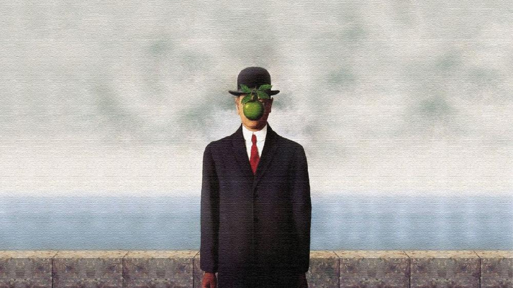
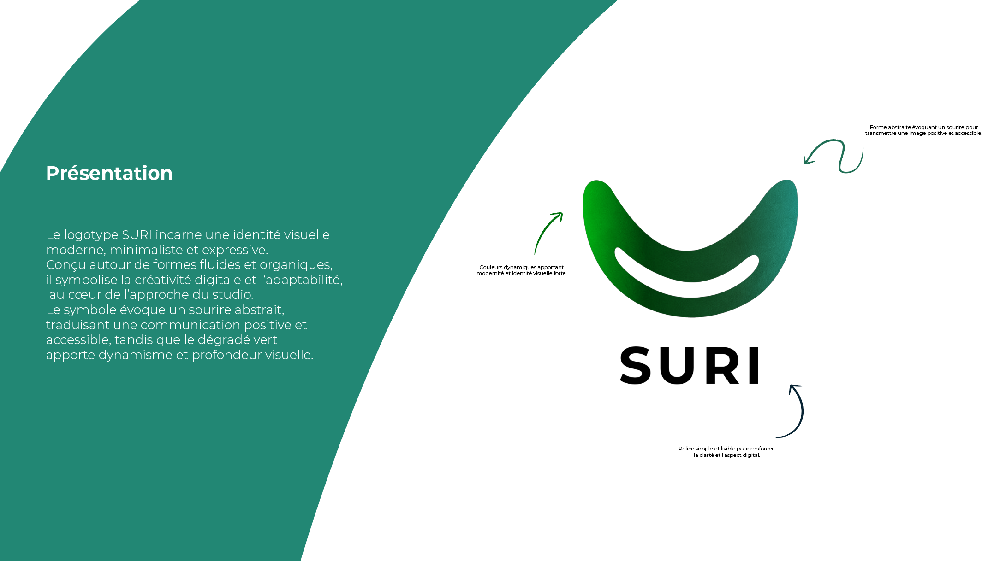
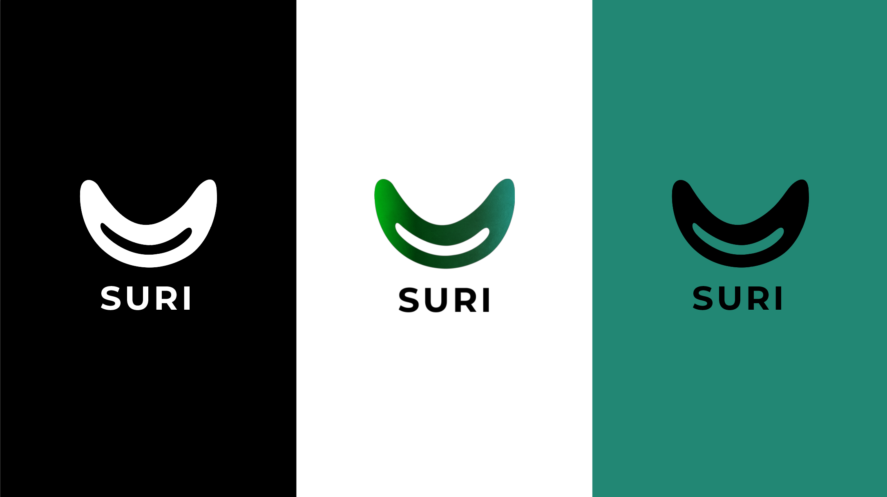

Agence
Suri

L'Expérience Utilisateur
L'objectif était de créer une plateforme digitale percutante pour Suri, une agence web créative.
Le site devait dépasser le simple statut de portfolio pour devenir une véritable démonstration de notre savoir-faire technique.
J'ai opté pour des micro-interactions soignées, une navigation asynchrone ultra-rapide et des transitions de page sans coupure
pour affirmer l'identité "premium" et innovante de l'agence.
Design System
L’interface a été pensée autour d’une esthétique sobre et lisible, pour laisser la place au contenu et aux animations.
La typographie et les espacements structurent la lecture tandis que les contrastes guident naturellement l’attention.
Plutôt qu’un design system complexe, le projet repose sur des règles graphiques simples et cohérentes,
appliquées sur l’ensemble du site afin de garantir une expérience claire et homogène.


Performance & Code
Le site a été entièrement développé en HTML, CSS et JavaScript, avec GSAP pour orchestrer les animations et donner du rythme à la navigation.
L’objectif n’était pas d’empiler les technologies, mais de garder un contrôle total sur le rendu et les performances.
Chaque interaction a été pensée pour rester fluide et légère : animations optimisées, chargements maîtrisés et structure propre.
Le projet démontre qu’une expérience visuelle forte peut rester rapide, stable et agréable sans dépendre de frameworks lourds.